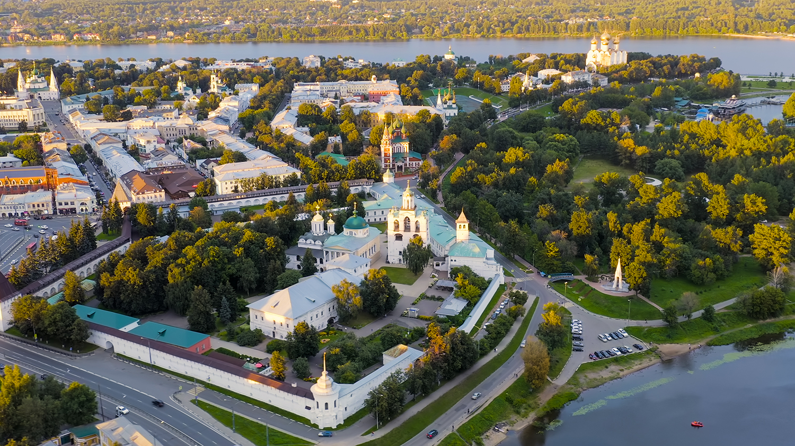

Исторический центр Ярославля — часть города Ярославля, внесённая в список Всемирного наследия ЮНЕСКО как «выдающийся пример градостроительной реформы Екатерины II, развёрнутой в масштабах всей России в 1763 году».

Ограничена улицами Собинова (собственно объект охраны) и Республиканской (буферная зона). Большая часть этой территории известна в ярославской истории как Земляной город (а территория на мысе Стрелка — Рубленый город).
На территории (около 110 га) объекта ЮНЕСКО на настоящий момент расположено 140 памятников архитектуры, находящихся под государственной охраной, примерно столько же могут быть включены в этот список дополнительно. Культурное наследие исторического центра составляют как отдельные достопримечательности, так и архитектурные ансамбли определенных улиц, площадей, набережных.
Более подробная информация по ссылке